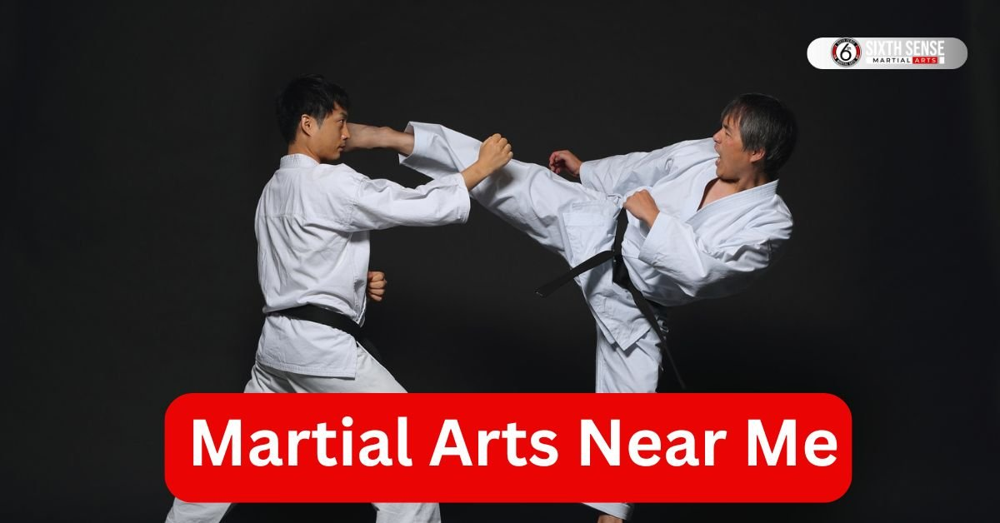
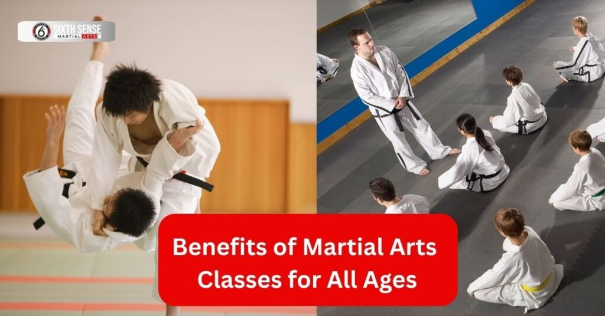
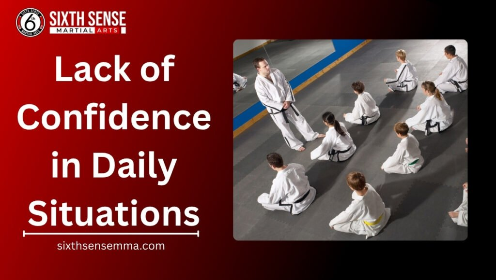

Martial Arts Near Me: Top Classes for Self Defense and Confidence

Looking for martial arts near me? You’ve landed in the right spot. Martial arts classes offer more than just cool moves they’re a fantastic way to boost self-defense skills and confidence. You are a kid teen or adult these programs bring something special to the table. Let’s dive into what makes martial arts a great choice and how they can fit into your life.
What Are Martial Arts and Why Start Now?
Ever wondered what martial arts really are? At its core martial arts is a mix of physical techniques and mental training like karate or krav maga designed for self-defense and personal growth. It’s not just about kicks and punches it’s a journey that builds discipline and fitness over time. With experienced martial artists guiding you you learn self-control and inner strength in a fun environment.
Why start now? Life can get busy but martial arts training offers stress relief and a great workout no matter your fitness levels. Plus with certified instructors nearby it’s easier than ever to jump in. Fall is a perfect time imagine building confidence before the holidays hit. Places like a local dojo or martial arts school often have free class options to try out.
Types of Martial Arts Programs
- Karate: This style focuses on powerful kicks and punches perfect for building discipline and confidence. It’s great for students of all ages.
- Krav Maga: A practical self-defense system from Israel ideal for real-world safety skills. Adults and teens love its intensity.
- Kids Martial Arts: Tailored for young learners these programs emphasize fun environment and age-appropriate moves to build character.
- Muay Thai: Known for its striking techniques it’s a solid choice for those wanting a challenging workout and self-defense skills.
- Brazilian Jiu-Jitsu: Focuses on ground fighting and technique offering a unique way to learn self-defense and personal growth.
How Martial Arts Builds Personal Growth
Martial arts does wonders for personal growth. It starts with self-confidence mastering a new move makes you feel unstoppable. Then there’s self-control which helps you stay calm under pressure. Kids active in these programs often show better listening skills while adults find stress relief through focused training. Over time you’ll notice inner strength growing especially with guidance from a martial arts instructor. It’s like a structured environment that pushes you to set and reach goals step by step.
Benefits of Martial Arts Classes for All Ages
Martial arts classes are a game-changer for everyone from kids to adults. They bring physical and mental perks that fit any lifestyle. You are looking to get back in shape or teach your family safety skills these programs work for all ages. Let’s break down what you can gain from joining a local martial arts program.
Physical Fitness and Self-Defense Skills
Physically martial arts is a fantastic workout. You’ll improve fitness levels with kicks and punches that tone your body. Self-defense skills come next learning moves like those in krav maga can keep you safe. Even beginners pick up effective self-defense techniques fast thanks to certified instructors. Plus it’s a fun way to meet fitness goals without feeling like a traditional gym grind.
Mental Focus and Life Skills Development
Mentally these classes sharpen your focus. Practicing martial arts helps with goal-setting and builds discipline and confidence. Kids gain life skills like better listening while adults find stress relief through each session. It’s a family-owned approach that fosters a sense of community. Over time you’ll see how this training shapes character and boosts self-esteem in a structured environment.

How Martial Arts Programs Work at Sixth Sense MMA
Curious about how martial arts programs actually play out at Sixth Sense MMA? We keep things straightforward and effective blending self-defense techniques with real personal growth for everyone involved. Our setup draws from classic styles like karate and krav maga but with a focus on Brazilian Jiu-Jitsu that suits all fitness levels. Instructors here are experienced martial artists who make sessions feel welcoming not overwhelming. You start with basics and build up always in a safe spot that encourages self-control and discipline and fitness. It’s less about perfection and more about steady progress think of it as your own martial arts journey toward inner strength.
Step-by-Step Training Process
- Warm-up and basics: Sessions kick off with light cardio and stretches to get your body ready focusing on simple self-defense moves like proper stance.
- Technique drills: Next you practice core skills say a krav maga block or karate punch with partners for feedback.
- Sparring or flow: Build confidence by applying what you’ve learned in controlled scenarios always with instructor guidance.
- Cool-down and review: Wrap up with breathing exercises for stress relief plus quick chats on what clicked and what to tweak next time.
Class Structure for Beginners to Advanced
Classes at Sixth Sense MMA adapt to your level You are new to martial arts training or a seasoned martial artist chasing that black belt vibe. Beginners get extra attention on fundamentals like safe kicks and punches in a fun environment. As you advance we layer in tougher drills such as ground work from Jiu-Jitsu to sharpen self-defense skills. Each session runs about an hour mixing group work with one-on-one tips from certified instructors. It’s all about that structured environment where kids active or adults can push their fitness goals without pressure.
Common Challenges Without Proper Martial Arts Training
Skipping out on solid martial arts training? It might seem fine at first but over time you could run into hurdles that sneak up on daily life. Without the right guidance from a martial arts school folks often feel stuck in ruts physically or mentally. Think about how easy it is to let stress build without those built-in outlets. At places like Sixth Sense MMA we see this a lot with newcomers sharing their stories. Proper programs help dodge these issues by fostering discipline and self-confidence early on. Let’s look at a couple common spots where it shows up.

Lack of Confidence in Daily Situations
Going without martial arts can leave you second-guessing yourself in everyday spots like handling a tense chat or walking home late. Self-defense skills aren’t just for movies they ground you making you feel capable. Many who join later say they wished they’d started sooner for that boost in self-confidence. It’s not dramatic; it’s practical like knowing a simple move could shift a bad moment. Our adult classes often turn that around quick with moves that build real assurance.
Missing Out on Community and Discipline
Another big one? You lose that sense of belonging and routine that comes from a dojo crowd. Discipline and self-control fade without the push leading to skipped workouts or scattered goals. Families miss out too kids active without structure might struggle with listening skills or goal-setting. Joining a group changes that; it’s like having a built-in crew cheering your martial arts journey. We’ve watched students transform just by showing up consistently gaining both friends and focus.
Current Trends in Martial Arts Schools
Martial arts schools are shifting in cool ways these days and it’s exciting to see what’s popping up near you. People are loving how places mix old-school karate with fresh ideas especially as self-defense stays a big draw. With more families jumping in schools are adapting to fit busy schedules and different fitness levels. Even late at night like right now at 11:29 PM on this Friday October 17 2025 folks are chatting online about these changes. It’s less about tradition and more about what works for everyone from kids active in classes to adults seeking stress relief. Let’s check out a couple trends shaping the scene.
Rise of Family-Friendly Programs
Family-friendly programs are taking off big time. Parents love bringing kids and teens to learn self-defense together in a fun environment. These sessions often blend karate basics with age-appropriate moves so everyone gets something out of it. Sixth Sense MMA for instance offers options where families can train side by side building discipline and confidence as a team. It’s perfect for busy households letting you bond while picking up safety skills. More schools are jumping on this making martial arts a family affair.
Integration of Modern Fitness Elements
Another trend? Adding modern fitness twists to martial arts training. Think kickboxing routines mixed with cardio blasts to hit fitness goals hard. Martial arts schools now include strength moves alongside traditional kicks and punches appealing to adults wanting a great workout. Certified instructors guide you through ensuring it’s safe and effective for all ages. It’s a smart way to get back in shape while mastering self-defense and it’s drawing in folks who might’ve skipped a traditional dojo before.
Our Martial Arts Programs at Sixth Sense MMA
At Sixth Sense MMA we’ve crafted martial arts programs that fit everyone’s needs from little ones to grown-ups. Our focus leans on Brazilian Jiu-Jitsu but we mix in karate and krav maga for a well-rounded experience. You are after self-defense skills or just a way to build character our certified instructors make it happen. It’s all about a structured environment where discipline and fitness grow naturally. Plus with classes open to students of all ages you’ll find a spot that feels right let’s dive into what we offer.
Kids Martial Arts: Intro to Jiu Jitsu and Little Champions
Our kids martial arts programs kick off with Intro to Jiu Jitsu where young learners start with basic moves in a fun environment. Little Champions steps it up focusing on discipline and self-confidence through age-appropriate drills. These sessions help kids active in class build listening skills and inner strength. Parents notice the difference fast kids come home prouder and more focused. It’s a gentle start to a martial arts journey with certified instructors guiding every step.
Teen and Adult Martial Arts Classes
Teens and adults get their own space with our martial arts classes blending self-defense with personal growth. We cover krav maga for practical safety skills and karate for technique tailored to different fitness levels. Adult classes are a hit for stress relief and getting back in shape while teens enjoy the challenge of kicks and punches. Experienced martial artists lead the way creating a community where everyone pushes their goals forward.
Special Family and Group Sessions
Want to train as a family? Our special sessions are designed for that. These group classes let parents and kids learn together building discipline and confidence side by side. We adapt the pace for all ages mixing Jiu-Jitsu basics with fun workouts. It’s also great for small friend groups looking to try martial arts training. The focus stays on safety skills and bonding guided by instructors who keep it lively and supportive.
Why Choose Sixth Sense MMA for Your Martial Arts Journey
Picking the right spot for your martial arts journey matters a ton and Sixth Sense MMA stands out for good reason. We’re all about making training feel personal and doable You are eyeing self-defense skills or just want to build discipline and fitness. Our family-owned vibe means you get real attention from folks who’ve walked the path as experienced martial artists. No cookie-cutter classes here instead it’s tailored moves that fit your life from kids active sessions to adult classes. Parents and grown-ups alike tell us it’s the spot that clicks turning workouts into something you look forward to. Let’s talk about what sets us apart day to day.
Experienced Instructors and Safe Environment
Instructors at Sixth Sense MMA bring years of know-how to every class holding degrees in martial arts training that show in their teaching. They’ve mastered styles like karate and krav maga passing on tips that stick for self-defense and beyond. Safety comes first too our space is set up for all fitness levels with padded floors and clear rules to keep things smooth. Kids martial arts folks feel at ease right away while adults appreciate the focus on proper form to avoid tweaks. It’s that blend of skill and care that builds self-confidence without the worry.
Flexible Schedules with Free Open Mat Days
Life’s hectic so we keep schedules loose to match morning evening even weekend slots for martial arts classes. Drop in when it works no rigid commitments. Those free open mat days? They’re a highlight letting you roll with Jiu-Jitsu or practice kicks and punches on your terms. Bring a buddy or just chill with the group; it’s casual practice that sharpens skills and sparks chats. Folks say it’s the easy rhythm that keeps them coming back for that martial arts near me fix.
Sixth Sense MMA vs Other Local Martial Arts Providers
Wondering how Sixth Sense MMA stacks up against other spots around? We get that question often from folks hunting martial arts near me. While many gyms push generic fitness we zero in on what really counts: practical self-defense mixed with personal growth in a dojo that feels like home. No massive crowds or rushed sessions just solid hands-on time with certified instructors who adapt to you. It’s the little things like our emphasis on discipline and self-control that make a difference over the usual chain operations. Quick side-by-side shows why switching feels worth it.
Unique Focus on Brazilian Jiu-Jitsu Techniques
What makes us different? Our deep dive into Brazilian Jiu-Jitsu techniques woven with krav maga for street-smart self-defense. Other providers might skim the surface with basic karate but we teach ground work and escapes that build real inner strength. Martial artists here progress faster because it’s hands-on not just demos. Adults and kids active alike pick up moves that translate to everyday safety setting us apart from the pack that sticks to flashy strikes alone.
Better Value in Program Options
Value-wise our program options beat out most local martial arts schools. You get unlimited access to classes for a flat rate covering everything from kids martial arts to adult sessions without hidden fees tacked on. Competitors often charge extra for basics like open mats or family spots but we bundle it all. It’s smart pricing that lets you chase fitness goals and life skills without breaking the bank think full self-defense training for less than a fancy gym pass.
Support Options After Joining
Once you’re part of Sixth Sense MMA the journey doesn’t stop it gets better with solid support to keep you going. We know martial arts training can feel like a big step so we’ve got your back with resources that fit your pace. You are a kid building self-confidence or an adult sharpening self-defense skills our team makes sure you’re not alone. It’s all about that ongoing push to reach fitness goals and beyond right here in a dojo that feels like community. Let’s break down what you can count on after signing up.
Ongoing Guidance and Progress Tracking
Guidance keeps coming with every class thanks to certified instructors who check in on your moves. They watch your karate kicks or Jiu-Jitsu rolls offering tips to boost self-control and safety skills. We track progress too think simple check-ins to see how your discipline and fitness are growing. Kids active in the program get extra attention on listening skills while adults see how stress relief kicks in over time. It’s a laid-back way to stay on track without pressure tailored to your martial arts journey.
Access to Exclusive Online Offers
Joining unlocks some sweet online perks like special deals on gear or extra sessions. These exclusive offers pop up to help you dive deeper into martial arts classes without stretching your budget. Maybe it’s a discount on a krav maga workshop or a free class pass to share with a friend. It keeps the fun environment alive letting you explore new techniques like kicks and punches at your own speed. Folks love how it adds value to their training without the hassle.
Customer Reviews
Stacie Arce
“My son has been coming since December and grown so much. Coach Matheus is a jiu jitsu master from Brazil but more important than that, he is a skilled coach. He really makes the place special.”
Danilo De souza
“Family friendly and professional. My kids love Coach Matheus and Coach Milly. They’ve grown so much in confidence and discipline learning with them! 100% recommended!”
Márcio Rabelo
“Such a good vibe at this gym. Everyone’s super friendly and the coaches really know their stuff. It’s one of those places you feel comfortable right away with Coach Matheus, great mix of hard work and fun. Definitely worth checking out if you’re into Jiu Jitsu!”
juwaryiyya
“Extremely welcoming staff, the coach explained everything so well. It is the favorite part of my day! I also feel very comfortable as a Muslim woman because of how the room is shaped like an L giving privacy and comfort for sisters.”
Kaivan Askari
“Professor Matheus is amazing with the kids. His children’s classes are amazing. He also has a very consistent teaching style for adults as well.”
Contact Us
Got a question or ready to start your journey? Our team at Sixth Sense MMA is here for you, day or night. Located at 817 S MacArthur Blvd #100, Coppell, TX 75019, we’re just a step away. Ring us up at 469-972-7800 or shoot an email to info@sixthsensemma.com someone’s always around to chat. Need a quick answer? Drop by during our open hours, and we’ll sort you out. Our crew loves helping, whether it’s about classes or that free trial you’ve been eyeing. If any doubt pops up, don’t wait reach out, and let’s get you moving!
Conclusion
Martial arts near me has turned into a real game-changer especially with spots like Sixth Sense MMA leading the way. You’ve seen how these programs blend karate krav maga and Jiu-Jitsu to build self-defense skills and personal growth for all ages. From kids gaining discipline and confidence to adults finding stress relief it’s a fit for anyone. Our instructors bring experience and the community vibe makes every session worthwhile. If you’re ready to try it jump in your journey to inner strength starts with that first step. Give us a shout and see what works for you.
Follow Us on Social Media
Stay connected with Sixth Sense MMA through our social media channels. Follow us for class updates, training tips, and a closer look at our self defense community.
FAQ’s
At Sixth Sense MMA, you can explore a mix of martial arts styles like Brazilian Jiu-Jitsu, Karate, Krav Maga, Muay Thai, and more. Each class blends self-defense techniques with fitness and personal growth so you can find the best fit for your goals and comfort level.
Absolutely! Our classes welcome all experience levels. Beginners start with simple drills focusing on safety, balance, and confidence. Certified instructors guide you every step of the way, making it easy to learn at your own pace.
Yes, we do! Kids and teens can join age-appropriate programs like Intro to Jiu Jitsu and Little Champions, which focus on discipline, confidence, and teamwork in a fun and safe setting.
Martial arts classes are a full-body workout that builds strength, flexibility, and endurance. Alongside fitness, you’ll learn practical self-defense moves like blocks, escapes, and holds, helping you stay confident in real-life situations.
Yes! Sixth Sense MMA offers family and group sessions where parents and kids can train side by side. It’s a great way to build discipline, confidence, and teamwork while spending meaningful time together.
Train with us in Coppell
The first class is free. Shorts, a t-shirt and a water bottle. We lend the rest.
Book a free class